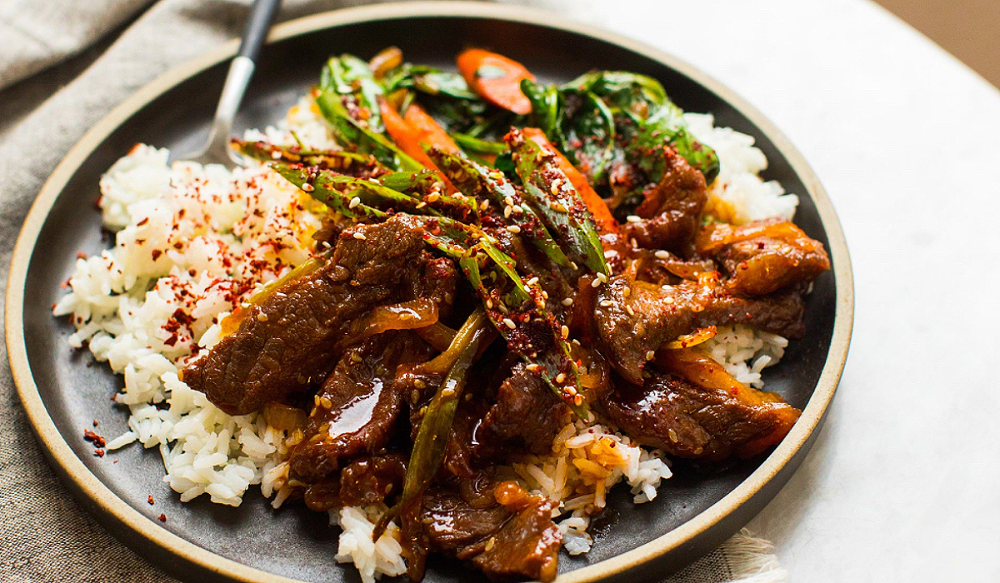

Gochujang Steak and Rice

Yooooo this is a nice one. Spicy and sweet and delightful, pretty sure this one is Tiktok's too.
Ingredients
- Steak of choice
- Gochujang
- Honey
- Rice
- Broccolini or similar
Da Method
- First, you're gonna want to wash and then steam your rice. Any method is fine.
- While that's happening, marinate your steak in a mix of Gochujang and honey.
- BBQ these jawns with the greens.
- Eat.